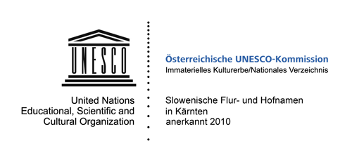

Die Namen auf dieser Karte wurden von Jozi Pack und Mitgliedern des slowenischen Kurlturvereins Gorjanci gesammelt.
Die Basiskarte unserer Anwendung basiert auf Daten von Openstreetmap, die
noch nicht immer vollständig sind.
Quellen
Die Daten der Basiskarte für unsere Anwendung werden von Openstreetmap unter
CC-BY-SA Lizenz zu Verfügung gestellt.
Sie sind noch nicht komplett, können aber von jedermann erweitert werden.
Die Tiles werden mit dem Mapserver gerendert und mit
dem Mapcache verteilt.
Die Luftbilddaten sind von www.geoimage.at und beinhalten ein Wasserzeichen.
Die Schummerung stammt von Hillshading Hike&Bike
Die verwendete Schrift 'Open Sans' wurde für unsere Zwecke angepasst und steht unter der
Apache License, version 2.0.
Erhältlich ist sie über Google Web Fonts
Die verwendeten Icons stammen von The Noun Project.
Die schönen Bilder, die unsere schöne Gemeinde zeigen wurden von Vinko Wieser aufgenommen. Bei ihm liegen auch alle Rechte dafür.
Kartengestaltung Benjamin Preisig, 2012